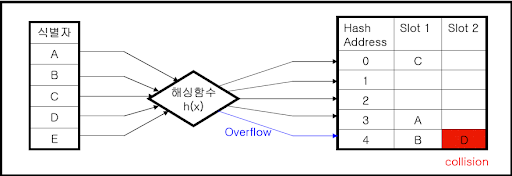

검색-Hasing
-
원소가 저장될 자리가 원소의 값에 의해 결정되는 자료구조
-
직접 접근(DAM) 파일을 구성할 때 사용되며, 접근속도는 빠르나 기억공간을 많이 요구한다.
- 다른 방식에 비해 검색 속도가 빠르다.
- 삽입, 삭제 작업 빈도가 높을때 유리하다.
- 키-주소 변환 방법이라고도 한다.
- 슬롯이 여러개일 수 있다.

해시 테이블(Hash Table 해시표)
- 버킷(Bucket) : 하나의 주소를 갖는 파일의 한 구역을 의미, 버킷의 크기는 같은
주소에 포함될 수 있는 레코드의 수를 의미 슬롯의 수
- 슬롯(slot) : 한 개의 레코드를 저장할 수 있는 공간으로 n개의 슬롯이 모여 하나의 버킷을 형성
- Collison(충돌 현상) : 서로 다른 두 개 이상의 레코드가 같은 주소를 갖는 현상
- Synonym : 충돌로 인해 같은 Home Address(Hash Address)를 같는 레코드의 집합
- Overflow : 계산된 Home Address 의 Bucket 내에 저장할 공간이 없는상태 (슬롯 부족),
- 슬롯이 넉넉하다면 Collison 은 발생해도 Overflow는 발생하지 않을 수 있다.
해싱 함수(Hasing Function)
- 제산법 : 레코드키(K) 를 해시표의 크기보다 큰 수 중에서 가장 작은 소수(Q)로 나눈 나머지를
홈 주소로 삼는 방식 h(k) = K mod Q 이다.
- 제곱법(Mid-Square) : 레코드 키 값(K)을 제곱한 후 그 중간 부분의 값을 홈 주소로
삼는 방식
ex) 키 값이 256 일때 제곱법으로 저장되는 홈주소(조건 : 가운데 3자리만)
256^^2 = 65536 h(K) = 553
- 폴딩법 : 두가지 Shift Folding, Fold Boundary
- 기수(Radix) 변환법 : 키 숫자의 진수를 다른 진수로 변환시켜 주소 크키를 초과한
높은 자릿수는 절단하고, 이를 다시 주소 범위에 맞게 조정하는 방법
- 대수적 코딩법(Algebraic Coding) : 키 값을 이루고 있는 각 자리의 비트 수를
한 다항식의 계수로 간주하고, 이 다항식을 해시표의 크기에 의해 정의된 다항식으로 나누어
얻은 나머지 다항식의 계수를 홈 주소로 삼는 방식
- 계수 분석법(숫자 분석법) : 키 값을 이루는 숫자의 분포를 분석하여 비교적 고른 자리를
필요한 만큼 택해서 홈 주소로 삼는 방식
- 무작위법 : 무작위(Random)법은 난수(Random Number)를 발생시켜 나온 값을 홈 주소로
삼는 방식이다.
Overflow 해결 방법
- 개방 주소법(Open Addressing) : 선형 방법(Linear Method)이라고도 하는데, Collison이
발생했을 때 순차적으로 그 다음 빈 버킷을 찾아서 저장하는 방법이다.
- 폐쇄 주소법(Close Addressing) : Overflow된 레코드들을 별도로 Overflow 영역에 저장하고
Chain(Pointer)으로 홈 버킷에 연결한다.
- Direct Chaining : 해시표 내의 빈 자리(Cylinder Overflow Area)에 Overflow
레코드를 보관한다.
- Indirect Chaining : 해시표와는 별도의 기억공간(Independent Overflow Area)에
Overflow 레코드를 보관한다.
- 재해싱(Rehashing) : Collision이 발생하면 새로운 해싱 함수로 홈 주소를 구하는 방식